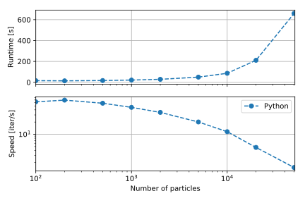
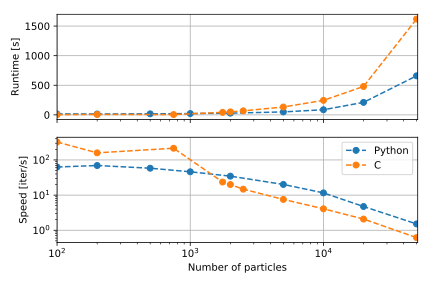
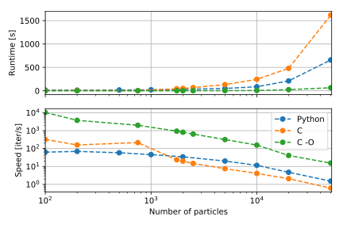

I’m giving a presentation on this less-than-glorious subject on Friday, so I figured, hey, it might be a nice time to write a summary of what that old repository on my GitHub page is. In a single video:
Admittedly, this post is going to be rather personal - this messy little code was basically my life for a few hundreds of hours.
The motivation
At the time, I was quite enamored with Python, NumPy, the ideals of open source scientific software and literate computing. I had seen how most scientific software seems to be written in uglier, less maintainable languages and thoroughly disliked the notion that We, the Scientific Community would have to keep struggling with those, no no no.
So I figured, hey, I can probably do better. I know NumPY! It’s basically writing FORTRAN without ever touching FORTRAN!
narrator voice: It isn’t.
So I went to the amazing Sławomir Jabłoński of IPPLM (to whom, a shout out, for he is truly an amazing person without whom this work would have gone nowhere). I discussed the idea with him and he seemed to like it. He agreed to supervise me on this idea.
What happened next?
The breakdown
Well, stuff happened, not least important of which was procrastination on a scale I had never performed. One of my personal flaws is a tendency to isolate myself and work alone on projects that are better undertaken in groups. I basically started writing a framework, refactoring it endlessly, delaying work on the critical bugs like the actual physics of my simulation, running test cases… What I had thought would have been simple turned out not to be. Don’t get me wrong, I learned a metric ton of Python and numerics knowledge - but I wasn’t getting much closer, and I wasn’t reaching out for feedback that what I was doing was, pretty much, crap.
I may have had a tiny nervous breakdown then. Eventually I reached out again to IPPLM and mr. Jabłoński, who agreed the situation is pretty bad but didn’t think it worth giving up on. The code ended up working after many adventures:
|\
* | 207371b wat
| |\
| * | 00b554c started writing diagnostics
| * | 3942c6e continue writing diagnostics, abandoning idea of multifunction simulation load'
| | * e726000 revert to old simulation init, energy calculation
| |/
| * ca0742a merged
| * 62fe945 energy still blows up
|/
* 6e172d6 merged
...
* 5068dfb langmuir waves kinda sorta running?
...
* b9580ac Finish fixing tests
* 864d27a Turn recurrent deposition into deposition on a while loop
* 280d176 Start fixing Laser simulation
...
* a5c4623 Fix difficult to find bugs in longitudinal current deposition
...
* 080a226 what may amount to releaseand I was able to benchmark it nicely.

The benchmarking
I then - only then, certainly a failure of foresight on my part - realized that I would need a comparable C/C++ code to benchmark my Python NumPy monstrosity against. That was not a happy thought.
But there was no way the low level drudgery could be avoided, so I went ahead, started learning the Eigen3 linear algebra library that has many similarities to NumPy - I needed something that in principle could work similarly, with mostly whole array based computations. The result of that is in this repository.
Admittedly, to this day I’m not even one hundred percent sure it does the same thing! The results seemed to be correct for the test cases I did run, but I’m not exactly sure I got all of the bugs. Most of the problems stem from the fact I used numpy.bincount for most of the current and charge deposition functionality (don’t do that, by the way, as that was the least efficient part of the code). That functionality is lacking in Eigen (or at the very least I was unable to find it), so I went ahead and implemented it by hand.
I then started benchmarking the two codes for identical initial conditions, and it turned out that -

success! PythonPIC is just as fast as the compiled C version!
… until you compile the C code with -O, the simplest optimization flag:

I didn’t bother checking -O3, though a friend was happy to remind me of its existence. I might thus be the proud author of the cleanest (well, not the least clean) and least efficient particle-in-cell code on the planet. Gotta start somewhere, right?
The defense
There’s not much to say. I went ahead, printed out a few copies of the thesis, realized via review I had made mistakes in plots etc. and had to print them out again. I went ahead, took my final exam, didn’t get grilled too hard, got a random exam question about - I think, as it’s been a while - the Schroedinger equation, and poof, trust me, I’m an engineer of Applied Physics. I’m still not sure how that happened.
I took a break from PIC codes for a while afterwards. A snippet of PythonPIC later went into PlasmaPy’s particle stepper capabilities. I still have a thorough dislike for that code and think it could be optimized.
All in all, I’m not sure about Python for PICs. On the one hand, they’re pretty inevitably going to be slower than C, C++ for now. You could write the computationally intensive parts in Julia or something - that would probably work and I’ve been itching to try my hand at that recently - but by that logic, you could probably implement the whole thing in Julia anyway, because Python really isn’t giving you anything of value there - maybe besides analysis, but that’s done post-run anyway.
But on the other hand, not all PICs are HPiCs - and if you’re just studying plasma physics alongside, say, Birdsall and Langdon, then you can probably live with having your code run a little slower than the sickest optimal C run time. I’ve been able to use my code (mostly before the break… remember the part where I was adding a ton of test cases?) to reproduce a bunch of their results and it’s worked out nicely.
I’d like to think PythonPIC has, thus, at least some value and use. It’s probably not too useful for high performance and research, but you need to funnel people into those somehow.
The lessons learned
Focus on the physics
No matter how beautiful and readable your code is, if it doesn’t do what it’s supposed to be doing, it isn’t worth a dime.
Precrastinate
I’ve once heard a summary of estimating time for completing programming projects (unfortunately I haven’t been able to find the source):
for any programming problem, make an estimate, double it, then increment the time unit to the next higher one.
It’s worth starting your stuff early…
Plan ahead and anticipate issues
… this part tells you how early to start. Still, unexpected difficulties will inevitably happen - they’re part of the learning process. Accept them and leave yourself enough time to deal with them constructively.
Reach out and talk about your problems
This goes both for scientific programming and for mental health. I would have truly gotten nowhere if I hadn’t had help from amazing people for both of these.
And… that’s about it! Phew. That’s a load off my chest, to be frank - the idea of writing this has haunted me for a while. Still, while the handling could have been better, I’m happy I wrote that little code.